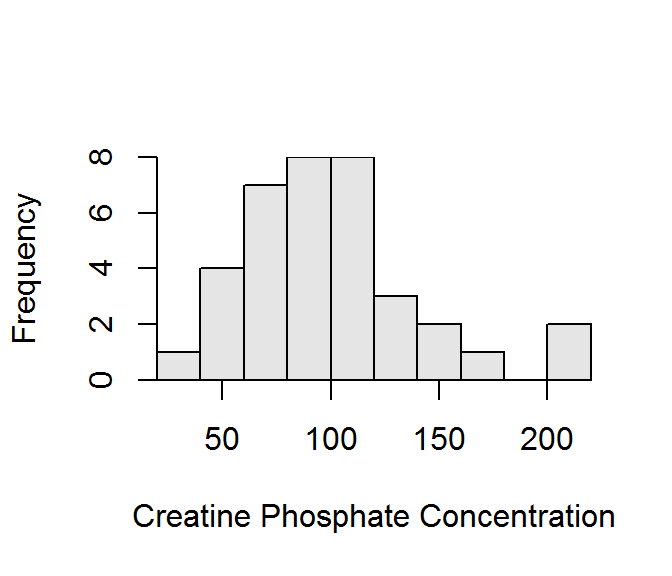

The time spent playing video games is very strongly right-skewed with an extreme outlier at 30 hours and another outlier at approximately 15 hours. The center is at a median of 0 hours and the dispersion is from a Q1 of 0 hours to a Q3 of 1.2 hours. The median and IQR were used because of the skew and presence of outliers. [Results are derived from the figure and table presented in the question.]
The bank transaction times are strongly right-skewed with no obvious outliers. The center is at a median of 93.0 hours and the dispersion is from a Q1 of 60.3 hours to a Q3 of 145.2 hours. The median and IQR were used because of the skew and presence of outliers. [Results are derived from the figure and table presented in the question.]
cp <- c(121,82,100,151,68,58,95,145,64,119,104,110,113,118,203,62,83,67,201,
101,163,84,57,139,60,78,94,93,92,110,25,123,70,48,95,42)
cpsum <- Summarize(~cp,digits=1)
figs(name="GCP","Histogram of the creatine phosphokinase concentrations in 36 male volunteers.")## [1] "Figure 1: Histogram of the creatine phosphokinase concentrations in 36 male volunteers."tabs(name="GCP","Summary statistics of the creatine phosphokinase concentrations in 36 male volunteers.")## [1] "Table 1: Summary statistics of the creatine phosphokinase concentrations in 36 male volunteers."The distribution of creatine phosphate concentrations is slightly right-skewed with no obvious outliers (Figure 1). [Note that I did not call the individuals above 200 outliers because they were only one bar removed, there were two individuals, and they “felt” like an extension of the right-tail.] The center is at a mean of 98.3 and the dispersion is a standard deviation of 40.4. The mean and standard deviation were used because the distribution was not strongly skewed and outliers were not present.

Figure 2:
Table 2:
n mean sd min Q1 median Q3 max
36.0 98.3 40.4 25.0 67.8 94.5 118.2 203.0 library(NCStats)
df <- read.csv("data/CreatinePhosphate.csv")
hist(~cp,data=df,xlab="Creatine Phosphate Concentration")
Summarize(~cp,data=df)